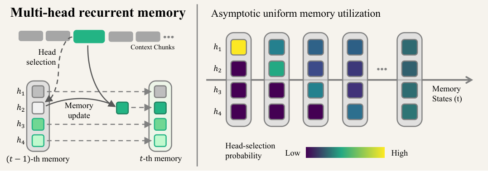
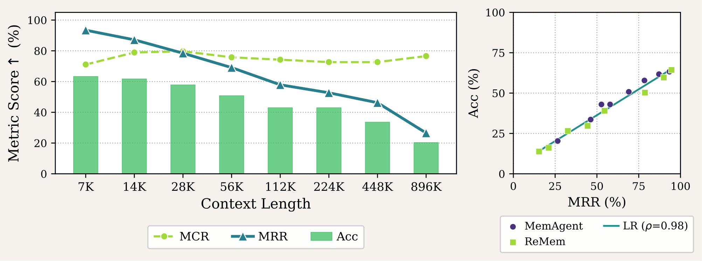
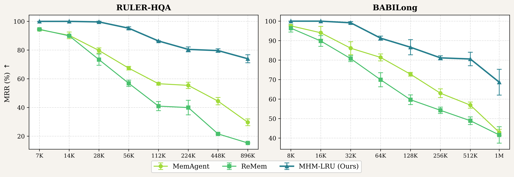
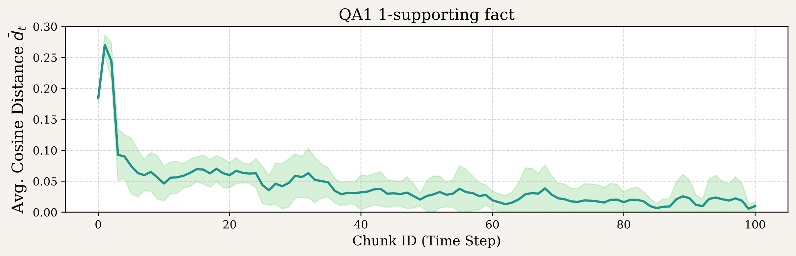
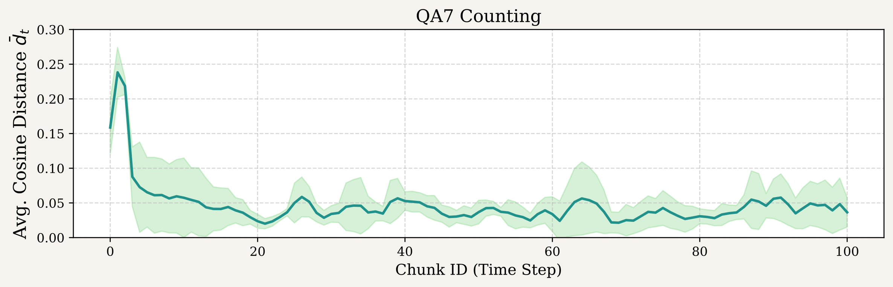

长上下文Agent的标准做法是把上下文切成块，维护一块有界记忆逐块更新。但这块记忆是单体的：每一步都要用新chunk的内容覆盖重写，留住旧信息和吸收新信息天然打架。
威斯康星这篇先做诊断：把性能拆成捕获率和保持率，发现抓信息一直很稳，丢信息才是崩盘主因。然后提出多头循环记忆MHM，从结构上治保持失败。下面拆开诊断、方法和实验。
上下文查询对记为(C,q)，上下文C太长放不进窗口，切成有序块C=(c₁,c₂,…,c_T)，记忆m_t逐块更新：m_t←f_θ(m_{t-1},c_t,q)，t=1,2,…,T。所有块跑完，只用最终记忆回答：y←LLM(m_T,q)。m_T是前T块到答案的唯一信息通道，更新的保真度就是这套范式的可靠性命门。
现有设计（MemAgent、ReMem、GRU-Mem）都把m_t维护成一块单体文本，作者称之为单头记忆。每步都必须用c_t导出的内容覆盖整块，保留已捕获信息和纳入新上下文的张力无处可去：每次更新都是对旧内容的一次潜在擦除。

借鉴工作记忆与遗忘检测的思路，论文把端到端性能拆成两个因子：记忆有没有在某个时刻捕获到相关信息（MCR），以及捕获到的信息有没有活过之后所有的更新、留到最终记忆里（MRR）。MCR=1/N·Σ𝟙(y*_i∈m_{i,t},∃t∈[T])，MRR=在捕获发生的那些query里、信息存活到m_T的比例。
在Qwen2.5-14B-Instruct的MemAgent上、RULER-HQA从7K测到896K：MCR全程稳定，说明不管多长Agent都抓得到信息；MRR一路崩，896K时掉到30%以下。答案早就进过记忆，是后面被覆盖掉了。
右图验证了这个分解的有效性：MRR和端到端准确率的相关系数ρ=0.98，MRR基本就是长上下文性能的代理指标。

诊断的结论是保持失败不是模型的失败，是记忆结构的失败。MHM把记忆拆成H个相互独立的头，更新走分阶段的先选后写：选择阶段按准则r_select(h|m_{t-1},q,c_t)挑一个头h*=argmax_{h∈[H]}r_select，更新阶段只重写这个头m^{h*}_t=f_θ(m_{t-1},h*,q,c_t)，其余头m^h_t=m^h_{t-1}原样保留。
更新时把完整记忆m_{t-1}作为上下文喂给模型，让它同时看到各头已保留的信息和新chunk值得写什么，既鼓励捕获新内容，又避免和未选中头里已存的信息重复。单头方法就是H=1的特例。
轻量实例MHM-LRU借鉴缓存替换：每步选最久没更新的头。两个好处：选择策略保证头利用多样化，可证明跨头渐近均匀；相对单头基线零额外token开销。
对照MemAgent（单头全覆盖）和ReMem（双异构头），在RULER-HQA（7K到896K）和BABILong（8K到1M，十种任务）上评测，基座Qwen2.5-14B-Instruct，每头容量1024 token，总容量4096对齐。
MRR全程碾压且差距随长度拉大：RULER-HQA 896K上MHM-LRU 73.96%，两基线不到30%；BABILong 1M上68.68%对MemAgent 42.96%。
端到端准确率同样：RULER-HQA 896K上49.74%对MemAgent 21.62%，原生长上下文LLM直接0.00%；BABILong 1M上41.41%对25.26%。

| 方法 | 7K | 14K | 28K | 56K | 112K | 224K | 448K | 896K |
|---|---|---|---|---|---|---|---|---|
| LLM | 60.16 | 60.94 | 50.00 | 57.03 | 50.00 | 37.50 | 8.59 | 0.00 |
| MemAgent | 62.24±0.97 | 60.94±1.10 | 56.25±2.21 | 50.52±0.37 | 42.19±0.64 | 42.97±0.64 | 33.33±0.98 | 21.62±0.98 |
| ReMem | 64.32±3.51 | 59.64±0.98 | 50.26±3.68 | 39.06±2.78 | 29.68±2.78 | 26.56±1.69 | 16.14±1.33 | 13.80±0.97 |
| MHM-LRU | 66.86±1.69 | 62.76±1.47 | 59.64±1.33 | 55.21±1.33 | 50.26±1.47 | 50.26±2.57 | 48.70±2.88 | 49.74±1.47 |
BABILong十种结构化任务上同样全程领先，1M处41.41%对25.26%对24.48%。
| 方法 | 8K | 16K | 32K | 64K | 128K | 256K | 512K | 1M |
|---|---|---|---|---|---|---|---|---|
| MemAgent | 58.85±2.66 | 55.99±2.58 | 53.39±2.42 | 47.14±0.98 | 44.66±1.64 | 38.02±2.88 | 32.55±1.61 | 25.26±0.97 |
| ReMem | 61.46±2.41 | 55.21±2.24 | 45.57±1.61 | 42.19±3.99 | 34.64±2.42 | 32.29±1.61 | 29.50±0.26 | 24.48±0.97 |
| MHM-LRU | 63.54±1.60 | 60.94±2.92 | 55.47±1.27 | 51.82±0.97 | 48.70±3.27 | 47.39±1.84 | 46.35±2.66 | 41.41±1.91 |
头数H从1变到16，MRR呈近似logistic式爬升。896K下：1头26.53%（等价MemAgent），2头69.89%，4头74.67%，8头87.12%，之后趋平。多一个头就是多一块免覆盖的保留地。
分阶段设计isolating：MHM-Concur把选头和更新并成一步，MCR反而更高（一次看到更多），但MRR掉到54.12%（分阶段73.96%），端到端准确率全线更低。指令复杂度上去，保持能力下来，分阶段是必要的。
选择准则isolating：MHM-Relevance让模型按语义相关选头，听着更聪明，但MRR不如无脑的LRU。规则化轮换的均匀性，比模型自以为是的相关性更保值。
| 配置 | 112K | 224K | 448K | 896K |
|---|---|---|---|---|
| MHM-Concur（非分阶段）· 准确率↑(%) | 46.88 | 42.97 | 35.94 | 33.59 |
| MHM-Concur（非分阶段）· MCR↑(%) | 71.09 | 74.22 | 74.22 | 66.41 |
| MHM-Concur（非分阶段）· MRR↑(%) | 72.53 | 73.68 | 56.81 | 54.12 |
| MHM-Relevance · 准确率↑(%) | 46.09 | 50.78 | 39.84 | 45.31 |
| MHM-Relevance · MCR↑(%) | 69.53 | 70.31 | 65.62 | 67.97 |
| MHM-Relevance · MRR↑(%) | 82.02 | 78.89 | 70.24 | 74.71 |
| MHM-LRU · 准确率↑(%) | 50.26 | 50.26 | 48.70 | 49.74 |
| MHM-LRU · MCR↑(%) | 67.97 | 71.88 | 71.09 | 69.16 |
| MHM-LRU · MRR↑(%) | 86.34 | 80.48 | 79.66 | 73.96 |
换Qwen2.5-32B-Instruct和gpt-oss-120b，在保持失败最严重的112K到896K区间复测。gpt-oss-120b上MemAgent的MRR掉到40%以下，MHM-LRU稳在68.85%；Qwen2.5-32B上MHM-LRU全程90%上下。保持收益来自记忆结构，不依赖某个模型的特性。
| 模型 | 记忆 | 112K | 224K | 448K | 896K |
|---|---|---|---|---|---|
| gpt-oss-120b | MemAgent | 75.00 | 55.84 | 61.64 | 35.71 |
| gpt-oss-120b | MHM-LRU | 84.48 | 75.44 | 69.35 | 68.85 |
| Qwen2.5-32B | MemAgent | 84.04 | 87.63 | 88.54 | 78.02 |
| Qwen2.5-32B | MHM-LRU | 93.02 | 95.65 | 90.00 | 81.91 |
MHM-LRU在中短上下文反而更快：112K上每样本25.9秒对31.5秒，极长处开销可忽略。输出token更少：7K上142.8对330.6，不到一半，到896K才追平。每头1024 token的写入比整块4096重写便宜，是省token的直接原因。
| 指标 | 方法 | 7K | 14K | 28K | 56K | 112K | 224K | 448K | 896K |
|---|---|---|---|---|---|---|---|---|---|
| 每样本时间（秒） | MemAgent | 2.8 | 5.1 | 9.2 | 17.3 | 31.5 | 59.1 | 114.3 | 224.9 |
| 每样本时间（秒） | MHM-LRU | 1.9 | 3.3 | 6.5 | 13.0 | 25.9 | 53.4 | 117.1 | 239.1 |
| 每样本token | MemAgent | 330.6 | 535.8 | 916.2 | 1705.6 | 2834.4 | 4943.4 | 9340.6 | 18013.9 |
| 每样本token | MHM-LRU | 142.8 | 214.4 | 419.5 | 898.9 | 1875.7 | 3814.0 | 9038.6 | 18085.5 |
多头会不会最后写成四份一样的东西？用句向量算头间平均余弦距离d̄_t：0表示各头语义完全相同，越大越分化。三个BABILong任务上d̄_t全程为正，头在没有显式多样性目标的情况下自发分化。
QA1（单支撑事实）多样性起手最高，抓到目标事实后迅速塌掉，20到40步后各头内容趋同：活干完了，头里存的是同一份答案。

QA4（二元关系）多样性维持在更高水平更久，关系型推理需要头间持续分工。

QA7（计数）多样性最持久且波动最大，符合计数的增量本质：每个头攒着不同的计数进度。

参考：https://arxiv.org/html/2607.01523v1